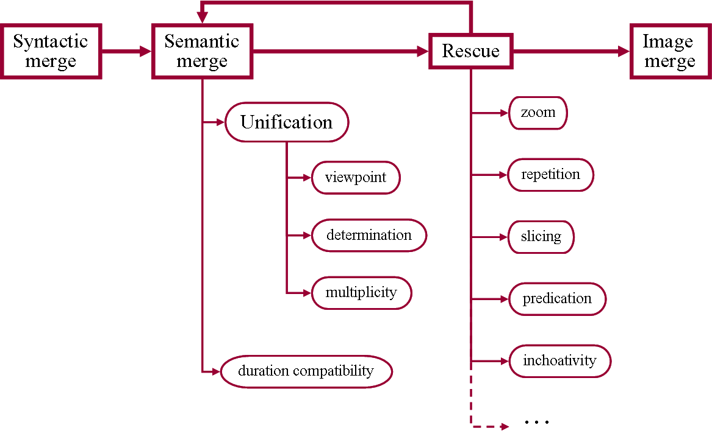

Note: the initial version of this lab was written in French. We hope
that there is no misinterpretation of aspectual relations in English.
Please signal any problem you may notice.
Introduction
Aspect is one of the most remarkable characteristics of the human semantic competence.
Any attempt to build clever machines will have, sooner or later, to reverse-engineer Aspect processing.
You may understand a sentence like:
"Last year, when the birds flew by, the alarm went off"
as either a single event or a repetitive event (the latter is the only interpretation in French with imperfect tense: L’année dernière, quand les oiseaux passaient, l’alarme se déclenchait.). You might even infer a causal link between the presence of the birds and the trigerring of the alarm.
How can machines achieve this?The difficulty of the problem
should neither be overestimated nor underestimated. The purpose of this
lab is not to offer a definitive solution. It is rather to show that
aspectual competence corresponds to an algorithm that is waiting for being reverse-engineered, and that this algorithm might not be that complex after all.
Aspectual correctedness
The following sentences are all syntactically correct, but some of them seem odd from a semantic point of view.
English -
French
Mary will drink the glass_of_wine (= glass of wine = the content of the glass)
Mary will drink the glass_of_wine in one minute
Mary will drink the glass_of_wine in 2022
Mary will drink the glass_of_wine during one minute
Mary will drink the glass_of_wine during the show
Mary will drink water
Mary will drink water in one minute
Mary will drink water in 2022
Mary will drink water during (for) one minute
Mary will drink water during the show
Mary will eat
Mary will eat in one minute
Mary will eat in 2022
Mary will eat during (for) one minute
Mary will eat during the show
Mary snored
Mary snored in one minute
Mary snored in 2010
Mary snored during (for) one minute
Mary snored during the show
Mary liked the wine
Mary liked the wine in 2010
Pierre a mangé le gâteau
Pierre a mangé le gâteau en une minute
Pierre a mangé le gâteau en 2010
Pierre a mangé le gâteau pendant une minute
Pierre a mangé le gâteau pendant le spectacle
Pierre a mangé du gâteau
Pierre a mangé du gâteau en une minute
Pierre a mangé du gâteau en 2010
Pierre a mangé du gâteau pendant une minute
Pierre a mangé du gâteau pendant le spectacle
Pierre a mangé
Pierre a mangé en une minute
Pierre a mangé en 2010
Pierre a mangé pendant une minute
Pierre a mangé pendant le spectacle
Pierre a ronflé
Pierre a ronflé en une minute
Pierre a ronflé en 2010
Pierre a ronflé pendant une minute
Pierre a ronflé pendant le spectacle
Pierre aimait le gâteau
Pierre aimait le gâteau en 2010
The examples in English are stored in asp_Sentences.pl.
The examples in French are stored in asp_Phrases.pl.
(all files are in tp_aspect.zip).
Note that tense is noted using symbols such as _PP for present perfect or _PRET for preterite.
Aspect Examples
Indicate below the sentences (if any) which, according to you, are semantically odd.
(select them in the language in which you feel more comfortable)
Aspectual switches
Reverse-engineering aspectual processing proves quite hard. All native
speakers, even young ones, nevertheless deal with aspect effortlessly
and without errors. Recent progress has been done in this area, thanks
to the work of linguists and computational linguists (such as a former
PhD Student, Damien Munch). Fundamental concepts underlying the processing of Aspect are presented now. They take the form of aspectual switches.
Viewpoint
You probably decided that a sentence such as "Mary will drink water in one hour" might be problematic if one hour
measures the duration of the drinking activity. The problem seems to be
topological by nature. Let’s use the classical open/close distinction.
Intuitively
‘drinking water’ is like an open set, whereas ‘in one hour’ would
correspond to a closed set. Similarly, the future tense (FUT)
puts the event into a closed set. Thanks to this intuition, the
incompatibility between "drink water" and "in one hour" makes sense.We introduce the aspectual switch viewpoint, which may take two values: f et g. These values correspond to the notions of closed and open sets respectively, or to the notions of figure and ground, or (for linguists) the notions of telic and atelic. A figure is perceived as a whole, whereas a ground is perceived from the inside. Another way of making the distinction consists in saying that grounds are self-similar (part of a ground is still the same ground), but part of a figure is no longer that figure.
Telicity
Considering self-similarity, would you associate the following verbs rather to figures or to grounds?
Determination
Our second aspectual switch has to do with determination. Time
periods such as ‘next week’, ‘one week’, ‘2022’, ‘one year’ behave
differently. Consider the sentences:
the market will collapse next week (= at some moment of next week)
the market will collapse in one week (= it will take one week / after one week)
the market will collapse in 2022 (= at some moment in 2022)
the market will collapse in one year (= it will take one year / after one year)
What is the difference, for instance, between ‘2022’ and ‘one year’?
Answer: the former is anchored in time, while the latter may be located anywhere.The notion of determination is introduced to capture this difference.
We introduce the aspectual switch determination, which may take two values:
d (determined), for example "2022",
u (undetermined), for example "one year".
The interpretation of "in/during p" as
"at some moment of/in/during p" is only possible with a determined period.
The implicit interpretation of "in" as meaning "after" is only possible with an undetermined period.
Determination
Using these criteria, decide which of the following expressions should
be regarded as determined (try to prefix each phrase with "She died
during") (caveat: syntactic determination may be misleading).
Occurrence
The Occ switch may take two values: sing or mult. It indicates that the event is consider to occur once or several times.
Duration
Much of aspectual processing is triggered by duration conflicts. For instance in:
She will marry in 2022.
She will use her bike in 2022.
there is a mismatch between the duration of the event (to marry, to use a
bike) and the duration of the time frame (a year).
This triggers futher processing, such as slicing in the first case (at
some moment in 2022) or repetition in the second case (several times in
2022)Typical durations are stored in the lexicon (we know that a
typical meal lasts for about one hour). In the implementation, durations
are stored in the feature dur as log10(<duration in seconds>). For instance, dur:1 means that the event typically lasts for 10 seconds.The duration feature may behave like a genuine aspectual switch, as some operations (slicing and predication) generate events that lack duration.
For instance, She drank alcohol! (in a context in which the fact was unexpected/wished/feared) loses its durativity. Similarly, at some point in 2022 has no duration either. These periods aremarked using a nil duration marker, for instance: dur:nil(0.3).
The duration aspectual switch prevents durative events from being matched with non-durative ones. However, in She drank alcohol in 2022, both nil durations can be matched.
Aspectual operators
Phenomena like aspectual coercion (see bibliography) reveal that aspect may be changed dynamically through at least four unary operators: zoom, repeat, slice, predication. Let’s consider them in turn.
Zoom
The effect of zoom is to transform a f into a g.
zoom
dp vwp:f occ:sing dur:<number>
→
dp vwp:g occ:sing dur:<number>
In the implementation, this operator applies only to determiner phrases (dp).
Repetition
Consider sentences like:
When Mary was building the wall, Peter was sick. Quand Marie construisait le mur, Pierre était malade.
When Mary was building the wall, Peter was cooking. Quand Marie construisait le mur, Pierre faisait la cuisine.
In 2, we tend to consider that Peter cooked several times. This comes
from the fact that there is a mismatch between the duration of
wall-building (one week or more, typically) and the duration of cooking
(about one hour).We introduce the dynamic aspectual operator repetition. Its first effect is to change a figure f, once repeated, into a ground g. The second effect of repetition is to change the value of the occ switch from sing to mult.
repetition
vpt vwp:f occ:sing dur:D
→
vpt vwp:g occ:mult dur:min(D)
Note that in the implementation, repetition affects only vpt (i.e. a verb phrase possibly followed by a prepositional phrase (vp [+ pp])). The mention dur:min(D) is used to force the repetition to last longer than the repeated event.
Repetition
Which examples among the following may reasonably receive a repetitive interpretation?
Slicing
A sentence like:
She will marry in 2022
is interpreted as the fact that she will marry some day in 2022. The
durative interpretation is blocked by the fact that a wedding cannot
last one year (compare with "she will be sick in 2022") and that one
usually does not marry several times in the same year (compare with "she
will use her bike in 2022"). The idea of "at some moment in 2022" or
"some day in 2022" presupposes that 2022 has been transformed into a
temporal slice of itself.We introduce the dynamic operator slice that transforms a determined durative period into a singular non-durative figure.
slicing
pp vwp:f occ:sing dur:D
→
pp vwp:f occ:sing dur:nil(D)
In the implementation, only temporal complements (pp) can be sliced. Note the use of nil to indicate that a slice has no duration.
Slices
Which examples among the following is likely to involve a slice?
Predication
Our fourth aspectual operator is predication.
Predication lies ‘at the top’ of linguistic expression. It could be said
that the purpose of most sentences is to produce a predicate that will
receive an attitude (the point of the sentence).
"Peter likes Mary" translates easily into like(Peter, Mary) (we assume here that a convenient predicate like is sitting in semantic knowledge, ready to be associated with the word "like"). Consider
the situation described by "drink water". One may imagine that the
drinking action proceeds through time, lasting about, say, 4 seconds. If
the relevance of the situation is due to the fact that it is opposed to
"drink alcohol", then it loses its temporal nature. In such a context,
"to drink water" may mean "not to drink alcohol". Predication comes with
an implicit attitude and an implicit negation. If you say "she will dress in brown", the predication of "dressed in brown" comes with the presupposition that her not
dressing in brown was (un)expected/wished/feared. Same thing for "She
will be dressed!" (as opposed, for example, to the
feared/wished/expected event "She will show up naked").We introduce a dynamic aspectual operator predication that may apply to certain phrases.
Here, predication will be indicated by an exclamation mark.
Consider the difference between:
she will (snore during the show)!
she will (snore)! during the show
In 1, predication concerns the whole phrase "snore during the show", while in 2, only the verb is predicated.One effect of predication is to convert events into non-durative singular figures (f).
predication
vpt dur:D
→
vpt vwp:f det:d dur:nil(D)
In the implementation, predication affects only vpt (i.e. a verb phrase possibly followed by a prepositional phrase (vp [+ pp])).
Predication (1)
In the sentence:
she will (snore during the show)! ...
Predication (2)
In the sentence:
she will (snore)! during the show ...
Inchoativity
Some sentences have a strange behaviour. For instance:
She will eat soup in two minutes and 30 seconds
seems odd at first reading. ‘Eating soup’ is a ground; it cannot be assigned to a delimited period of time (figure).
Then, an admissible interpretation pops up: that she will start eating soup after two minutes and 30 seconds.
To account for this behaviour, we introduce a dynamic aspectual operator, inchoativity, that may transform an undetermined durative
figure into a determined figure that is suppose to start after the
initial one. In other words, the period is changed into its own end.
Suggestion
Implement inchoativity.
Processing Aspect
Two implementations are proposed here, one in Prolog and the other in Python.
Both yield roughly the same results. The Python version reads two prolog files, the lexicon file asp_Lexicon.pl and the grammar file asp_Grammar.pl.
(all files are in tp_aspect.zip).
Discovering lexical structures
Observe the small lexicon in Lexicon.pl. As you can see, ‘eat’ has several definitions that differ (in part) by their syntactic category. For instance,
lexicon(eat, vp, [vwp:f, im:eat_meal, dur:3.5]).Here, vp means that the verb can be seen as a verb phrase on its own and does not expect any complement.The feature vwp means viewpoint. Its value may be f (figure) or g (ground).The feature im
stands for ‘image’. It would ideally refer to some perceptive
representation of the scene. Here, it will just consist of a nested
textual labels. The feature dur
represents typical duration (when applicable) as a 10-base logarithm in
second units. For instance, a duration of one hour is represented by
3.6, since 103.6 ≈ 4000.
Lexicon
Introduce new lexical entries for ‘draw’
(two meanings: one for drawing something, e.g. a circle, and the other one for drawing as an activity.) Don’t forget to indicate duration, viewpoint and image.
Copy your lexical entries below.
Discovering the grammar
Observe now the small grammar asp_Grammar.pl that is used to parse our examples. It is expressed using simple DCG rules. For instance: vpt --> vp, pp.This rule means that a vpt is a verb phrase vp followed by a prepositional phrase pp.
Note that the grammar is binary (no more than two items on the
right-hand side of rules). This is meant to represent the action of the
syntactic merge operation.
Note also the use of ip (inflection phrase), of tp (tense phrase) and of dp (determiner phrase), in accordance with modern linguistics.
Semantic merge
The most central component of the program is the "semantic merge", which
is triggered whenever two phrases are syntactically merged. The basic
semantic merge consists of matching the feature structures of the two
merged phrases.
Consider for instance the prepositional phrase in ten minutes.
The preposition in corresponds to the feature structure [vwp:f].
The phrase ten minutes corresponds to the feature structure
[vwp:f,det:u,im:10(minute),dur:2].
You can see that both structures match by executing the Prolog program asp_Main.pl or the Python program asp_Main.py.In prolog:
?- test(pp). ---> in ten minutes The sentence is correct [pp([vwp:f, det:u, im:10(minute),dur:2])] In Python:
Sentence > in ten minutes Correct! pp(pp): (vwp:f, det:u, im:'10'_minute, dur:2.0)The merging of structures is found in asp_Merge.pl (matchFS) or in asp_Lexicon.py (FeatureStructure.merge).
Viewpoint, determination, multiplicity) are merged based on identity
through unification. Duration is merged by checking duration
compatibility.

Semantic merge is not limited to mere feature matching. The "intelligent" part of aspectual processing lies in the set of aspectual operators (repeat, slice, predication...). These operators are implemented as "rescue" operations. In Prolog, the rescue procedure is found in asp_Merge.pl. It is called repeatedly at each backtrack.
In Python, the rescue procedure is in asp_Lexicon.py as a method in the class WordEntry.
The point of rescue is to transform the
aspectual representation of the current frame through slicing,
repetition or predication when applicable. Note that the applicability
of operators depends on the syntactic category (e.g. only pp can be sliced).
To run the program on French sentences, open asp_Main.pl and comment/uncomment the two first lines to change the language.
In Python, comment/uncomment two lines in the main procedure of asp_Main.py.
This will load asp_Lexique.pl instead of asp_Lexicon.pl and asp_Phrases.pl instead of asp_Sentences.pl.
At this point, the program correctly interprets some sentences. The
interpretation of examples is given as a kind of paraphrase. For
instance, in Prolog:
?- test. Sentence ---> Mary will drink the glass_of_wine
== Ok. f.d [occ:sing, dur:0.9] ---> in the future Mary ingest this glass_of_wineand in Python (no paraphrase in Python):
Sentence > Mary will drink the glass_of_wine Correct! __ ip(ip): (vwp:f, det:d, occ:sing, im:'Mary'_future_ingest_this_glass_of_wine, dur:0.9)Now test drink the glass_of_wine in one minute. In Prolog, you have to call:
?- test(vpt). Sentence ---> drink the glass_of_wine in one minute
and you have to press ; (semicolon) after true to get all interpretations.
Will Drink (1)
You should get two interpretations for drink the glass_of_wine in one minute.
Which aspectual operator is involved in this difference of interpretation?
Will Drink (2)
Consider the sentence (in Prolog, simply type test. to test a sentence):
Mary _PRES drink the glass_of_wine
You should get only one interpretation.
Which aspectual operator did apply here?
Let’s replace wine by water. Try the sentence Mary will drink water during one minute. You shouldn’t get any interpretation.
Why does this sentence get rejected? If we try the following:?- test(vpt).
(in Python, just type-in the phrase).
Phrase of type vpt ---> drink water during one minute == Ok. g.u [occ:sing,dur:0.9] ---> drink_some zoom 1 minute waterwe get a correct interpretation of the phrase as a ground (g).
If we look at the definition of will in Lexicon.pl, we can see that it corresponds to a figuref and a determined period d:
lexicon('will', t, [op:sep, vwp:f, det:d, im:future]).This explains the mismatch.
Yet, we feel that Mary will drink water during one minute
should receive some kind of interpretation. If you think about it, you
will observe that it is only true if "drink water during one minute" can
be regarded as unexpected/wished/feared (e.g. if it is a feat /
if Mary does not drink enough / if there is not enough water for all).
In other words, the sentence is acceptable is "drink water during one
minute" translates into a predicate that receives an attitude. As such
it loses its temporality.Open asp_Merge.pl and uncomment the last rescue0 clause (the one that involves predication).
In Python, augment the list of operators as asked in WordEntry.rescue in asp_Lexicon.py.
Now, the program is able to assign an attitude to vpt through the predication operation. Predication is indicated as (...)! in the output. Now we get several interpretations for the phrase drink water during one minute, including ?- test(vpt). Phrase of type vpt ---> drink water during one minute == Ok. g.u [occ:sing,dur:0.9] ---> drink_some zoom 1 minute water true ;
Test the sentence "Mary will drink water during one minute" and verify that it now receives some interpretations. Why is it so?
Before enabling predication, a sentence like Mary will drink water was rejected. Now that we have predication, it is accepted in two forms, the first one being: [vwp:f, det:d, occ:_2150,dur:nil(0.9)] ---> in the future Mary (drink_some water)!.
Will Drink (4)
Try the sentence Mary will drink water in 2028.
It is rejected. Why?
To get the sentence Mary will drink water in 2028 accepted, visit again the source to enable the slice rescue operation. In Prolog, suppress the fail, line in the clause of slice. In Python, add ‘slice’ to the list of rescue operators, as you did for predication.
Will Drink (5)
Why is the sentence Mary will drink water in 2028 now accepted?
(you may analyze the pp phrase in 2028 and see that there is a new alternative (type test(pp). in Prolog))
You may try to introduce new lexical words (as you did with ‘draw') and
new aspectual words such as ‘after’, try sentences with imperfect tense,
explore sentences in French, implement lexicon and grammar from another
language, and so on. Note that you can adapt the trace level to see
more detail.
Suggestion
This implementation of aspectual processing is
provided as an illustration. It is not yet perfect and it is not
complete. You may want to improve it on some aspects (no pun intended).
Bibliography
Dölling, J. (2014). Aspectual coercion and eventuality structure. In K. Robering (Ed.), Events, arguments, and aspects: Topics in the semantics of verbs, 189-226. John Benjamins Publishing Company.
Munch, D. & Dessalles, J.-L. (2014). Assessing Parsimony in Models of Aspect. In P. Bello, M. Guarini, M. McShane & B. Scassellati (Eds.), Proceedings of the 36th Annual Conference of the Cognitive Science Society, 2121-2126. Austin, TX: Cognitive Science Society.
{kind=link}